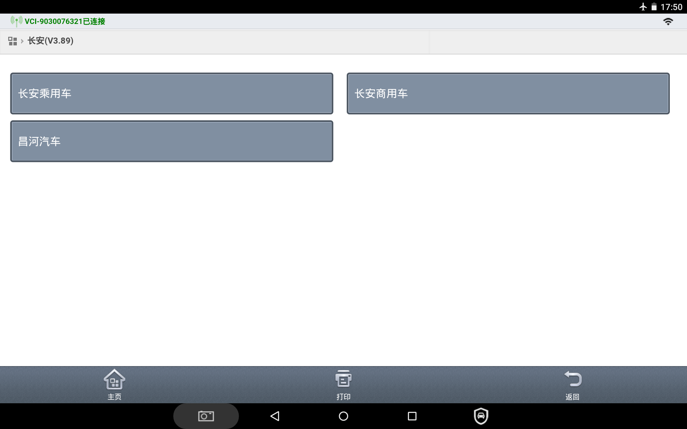
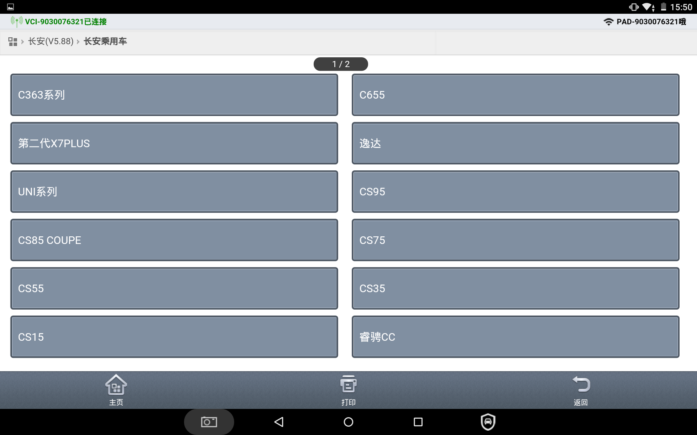
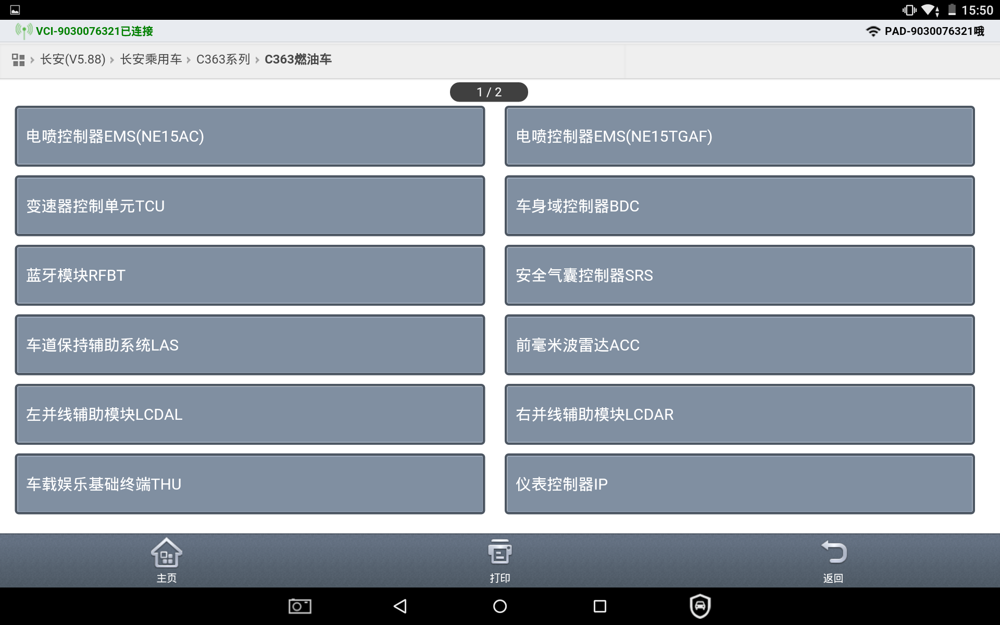
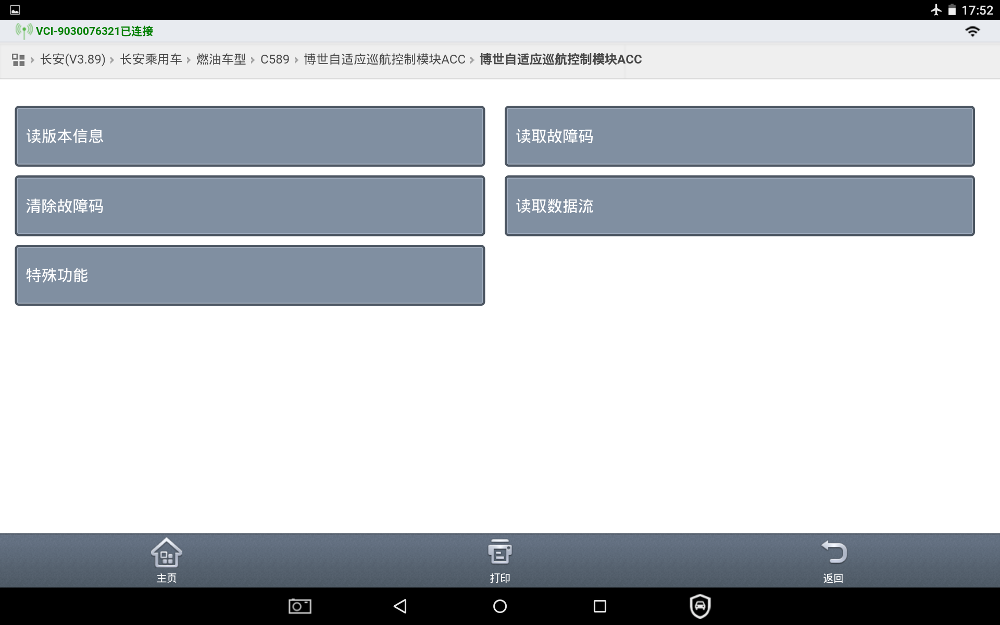
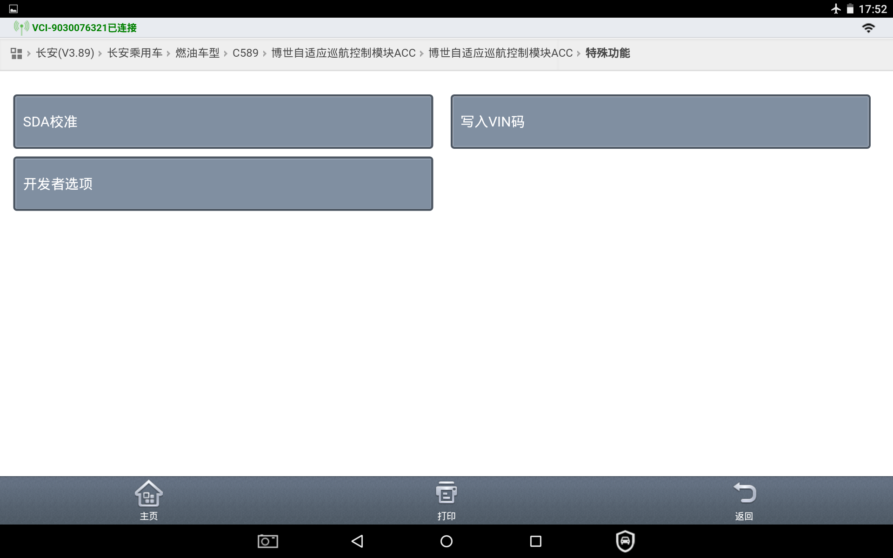
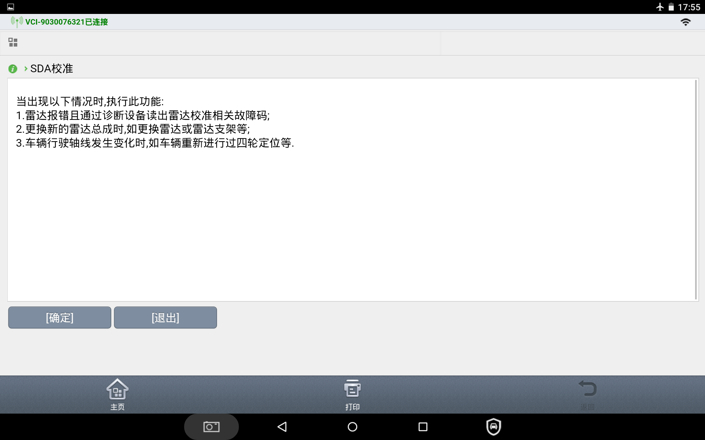
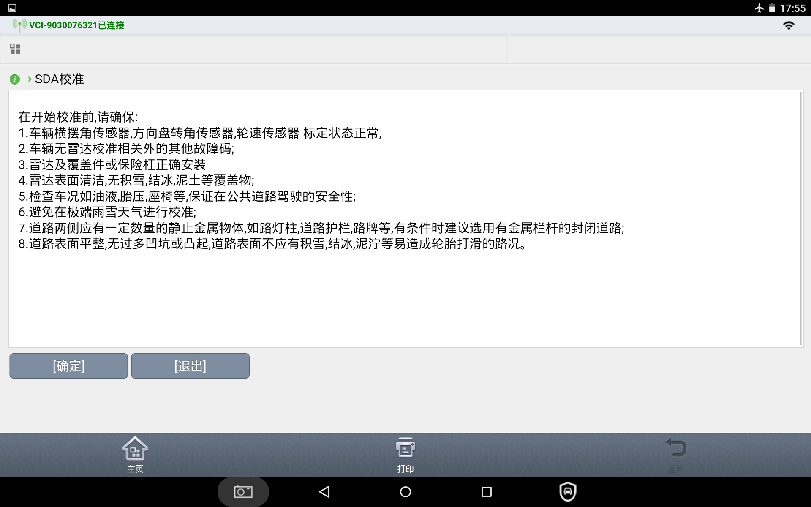
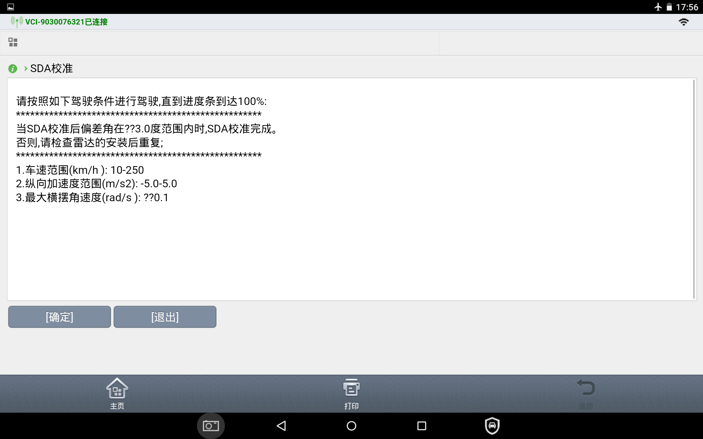
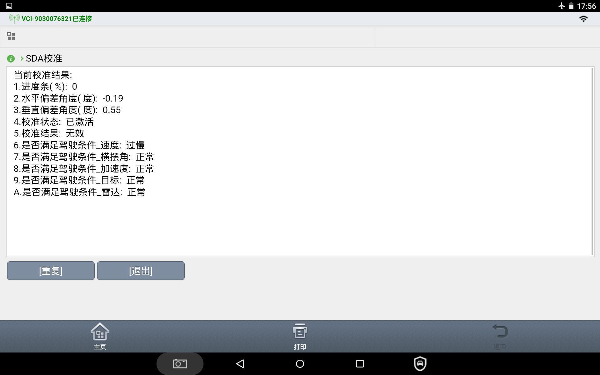

标定通过诊断仪来完成。
步骤一：
接上诊断仪：
1）进入长安乘用车

2）进入B216车型

3）进入前向毫米波雷达ACC控制器

4）进入前向毫米波雷达诊断界面
进入特殊功能，并确认。

进入SDA校准 。

根据提示操纵，直至“开始校准”。
1）诊断仪介绍校准的条件1，点击“确定”按键继续下一步

2）诊断仪介绍校准的条件2，点击“确定”按键继续下一步

3）诊断仪介绍校准的条件3，点击“确定”按键继续下一步

4)当进度条为100%，校准结果为已完成，则校准完成

步骤二：
在进入读取校准结果界面后，开始驾驶车辆，监控进度条。
驾驶要求：
车速：10-120km/h（速度在10km/h以上）
纵向加速度：-5-5m/s2（速度控制平稳）
横摆角速度：-0.1-0.1rad/s2（转向控制平稳）
曲率半径：0.001m（基本走直线）
ABS/TCS/EPBi：未激活
否则会在不满足条件中进行提示。
步骤三：
进度条达到100%时，如果水平、垂直校准偏差角均小于3°，直接确认完成校准；如果校准偏差角大于等于3°，需要拆除保险杠，确认ACC支架是否损坏。若损坏需要更换保险杠或者支架，再重复第一、二步进行标定。
步骤四：
读取故障码，检查产线模式是否关闭，如果没有关闭，关闭产线模式。清除故障码，重启车辆。
步骤五：
故障消除后，校准完成。